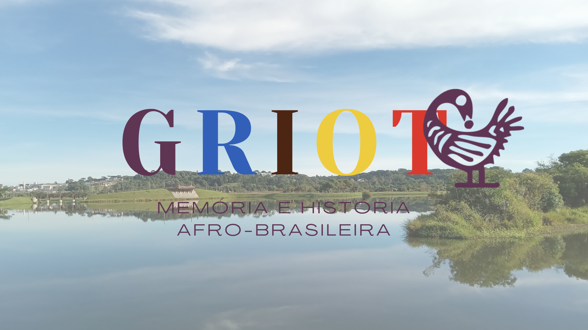
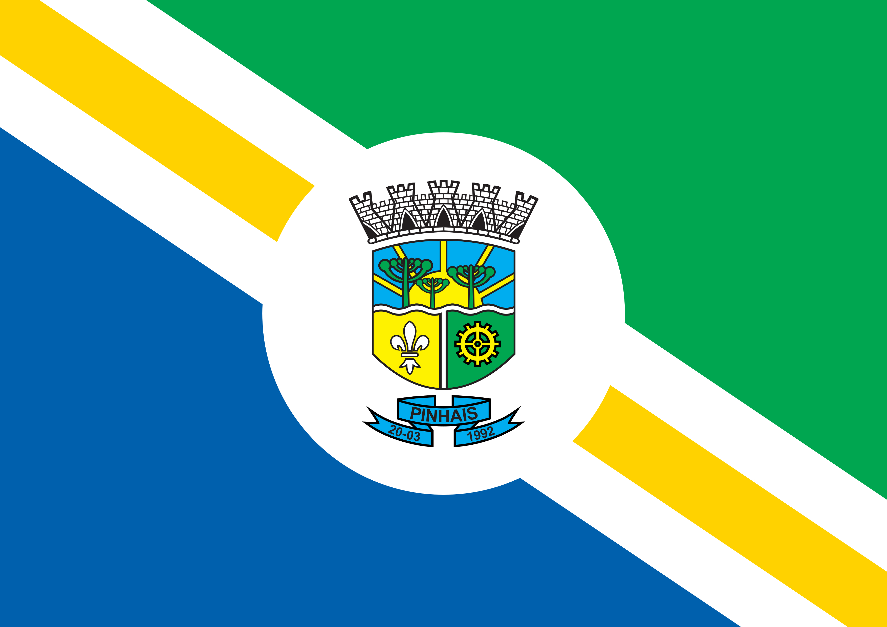
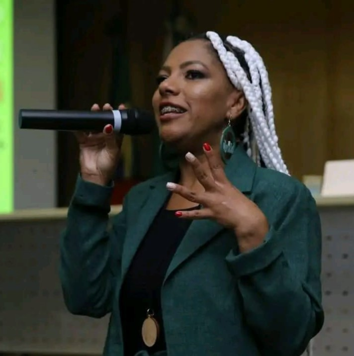
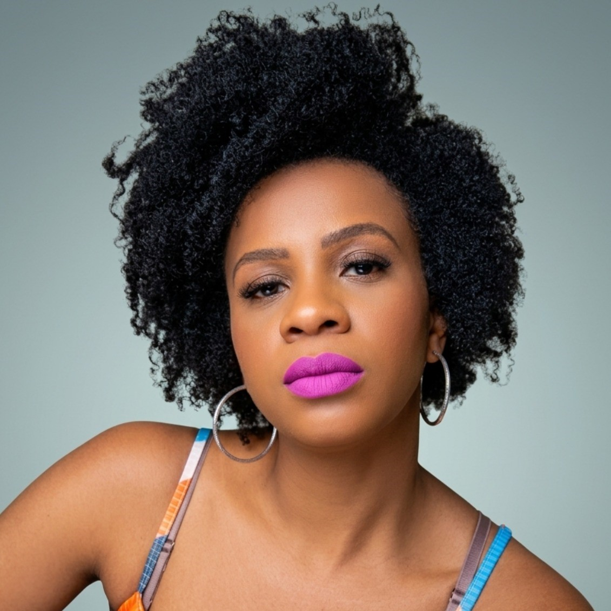
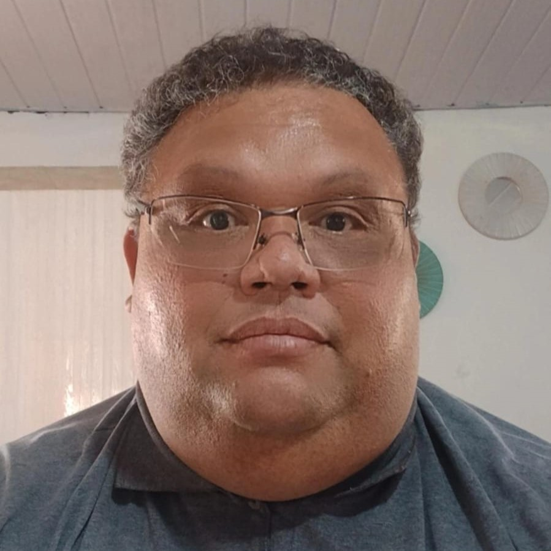
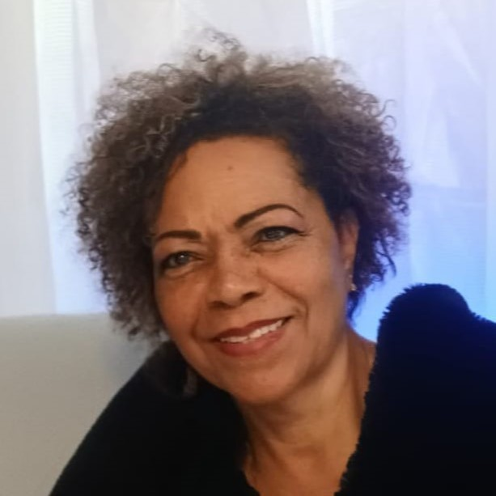
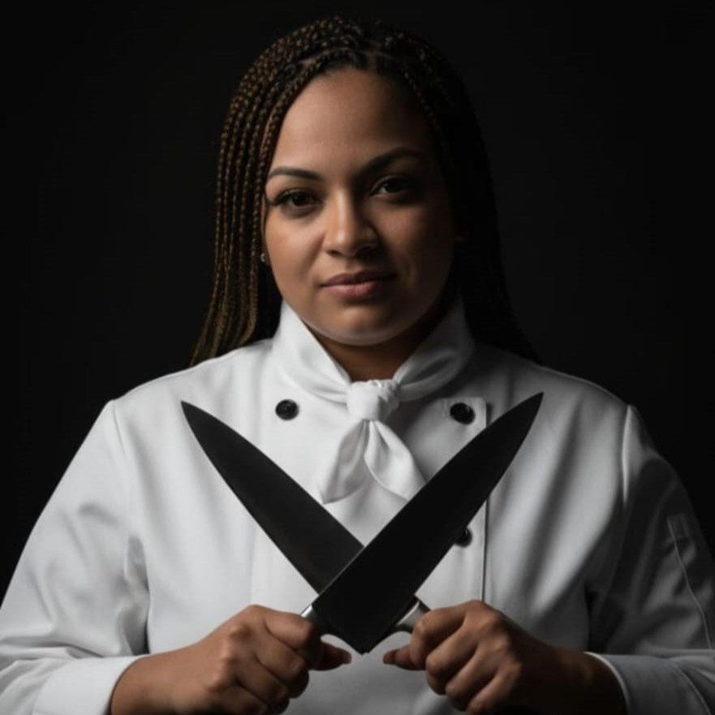
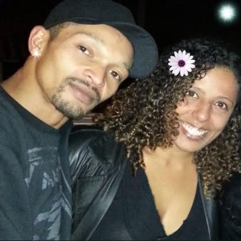

Bem-vindo ao GRIOT- Pinhais
És de um povo varonil Uma estrela que surgiu GRIOT!
Pinhais, integrante da Região Metropolitana de Curitiba, é uma cidade marcada pela diversidade cultural e pela participação de diferentes povos na construção de sua identidade. Entre essas contribuições, destaca-se a presença da população negra, cuja história, trabalho, manifestações culturais e participação social colaboram para o desenvolvimento do município.

Conteúdos que valorizam a Cultura Negra
Acesse a cultura afro-brasileira pinhaiense.







Músicas
Textos
![Capa do livro [Nome do Livro]](https://cdhjzkmlucahtllfpdlx.supabase.co/storage/v1/object/public/Biblioteca/CapasImagem/semcapa.jpg)